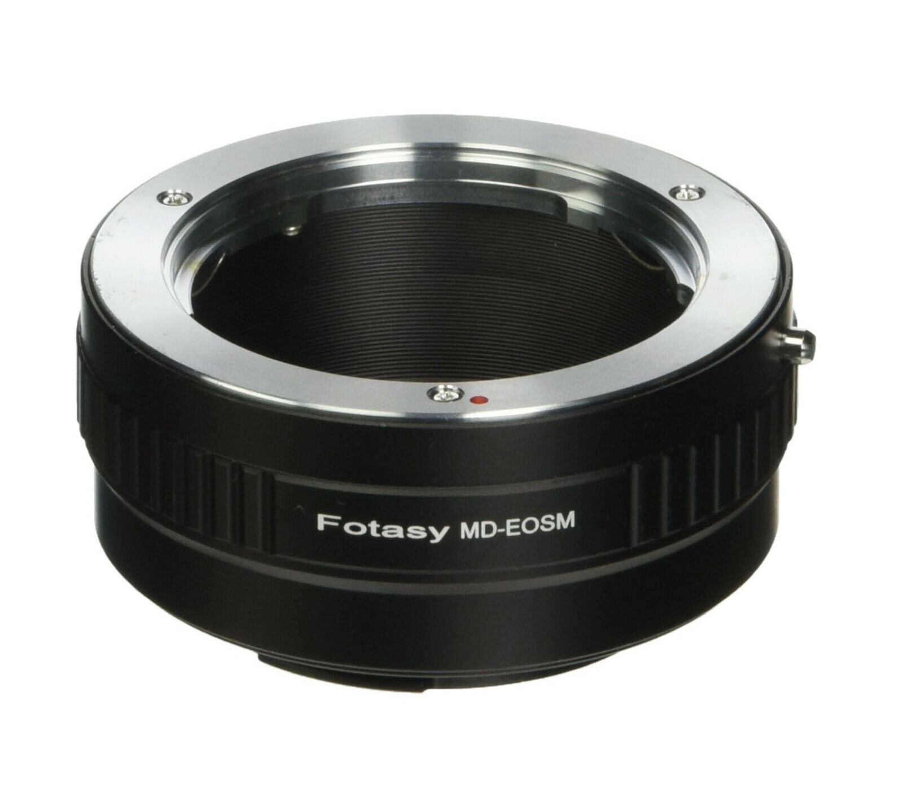
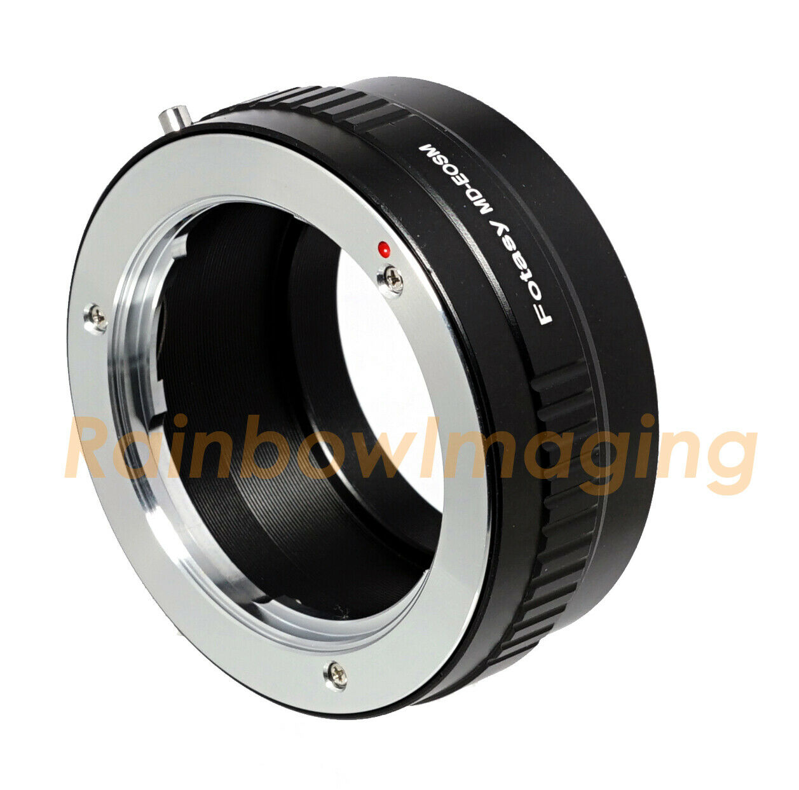
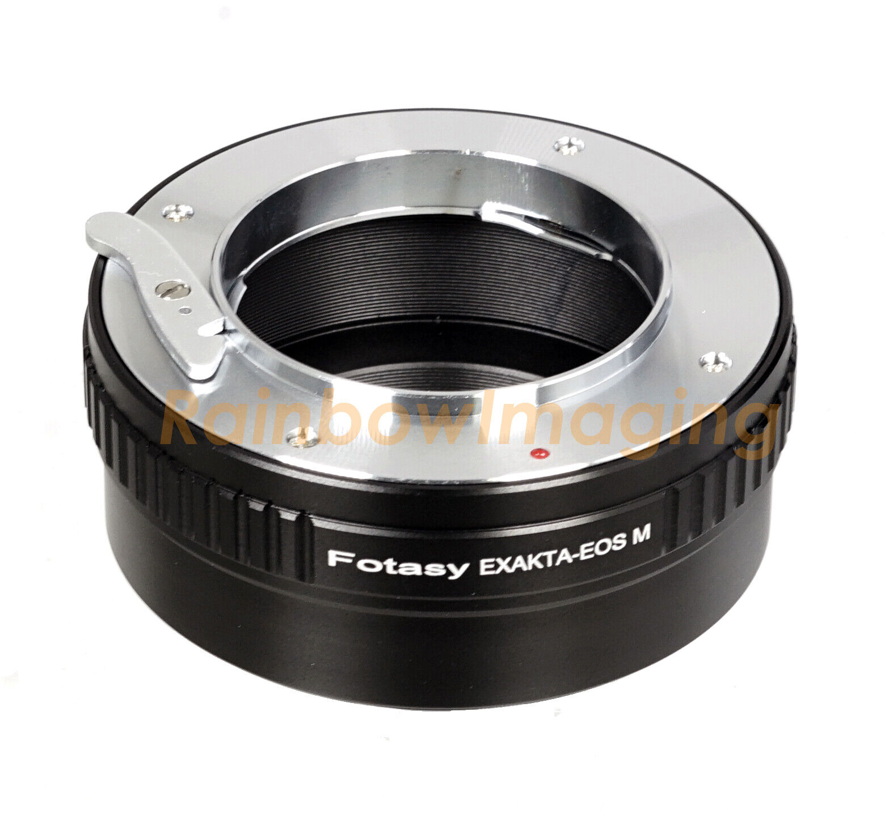
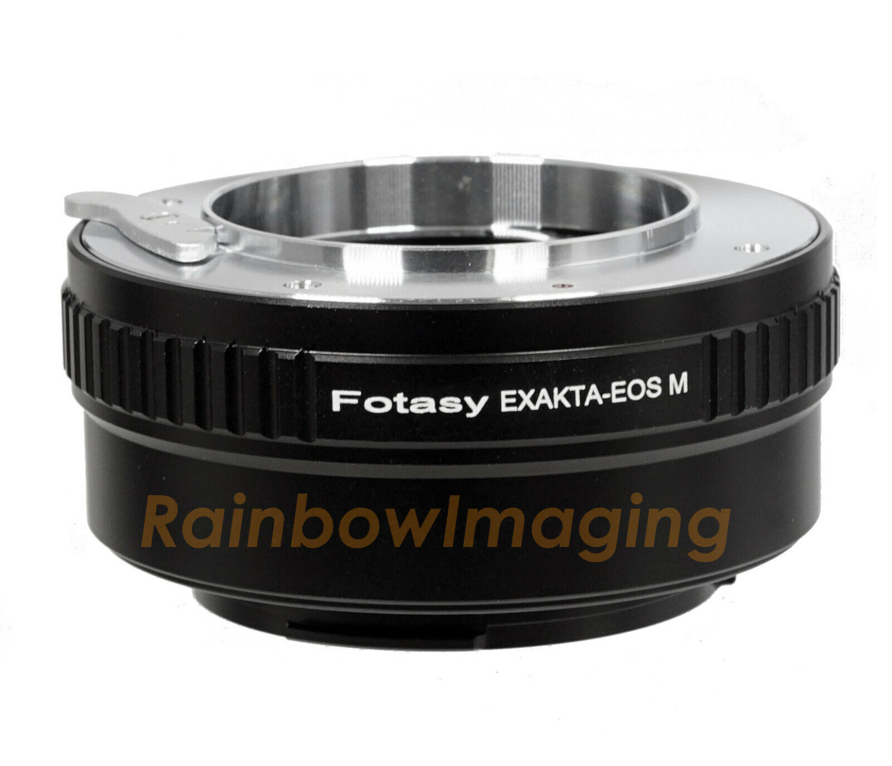
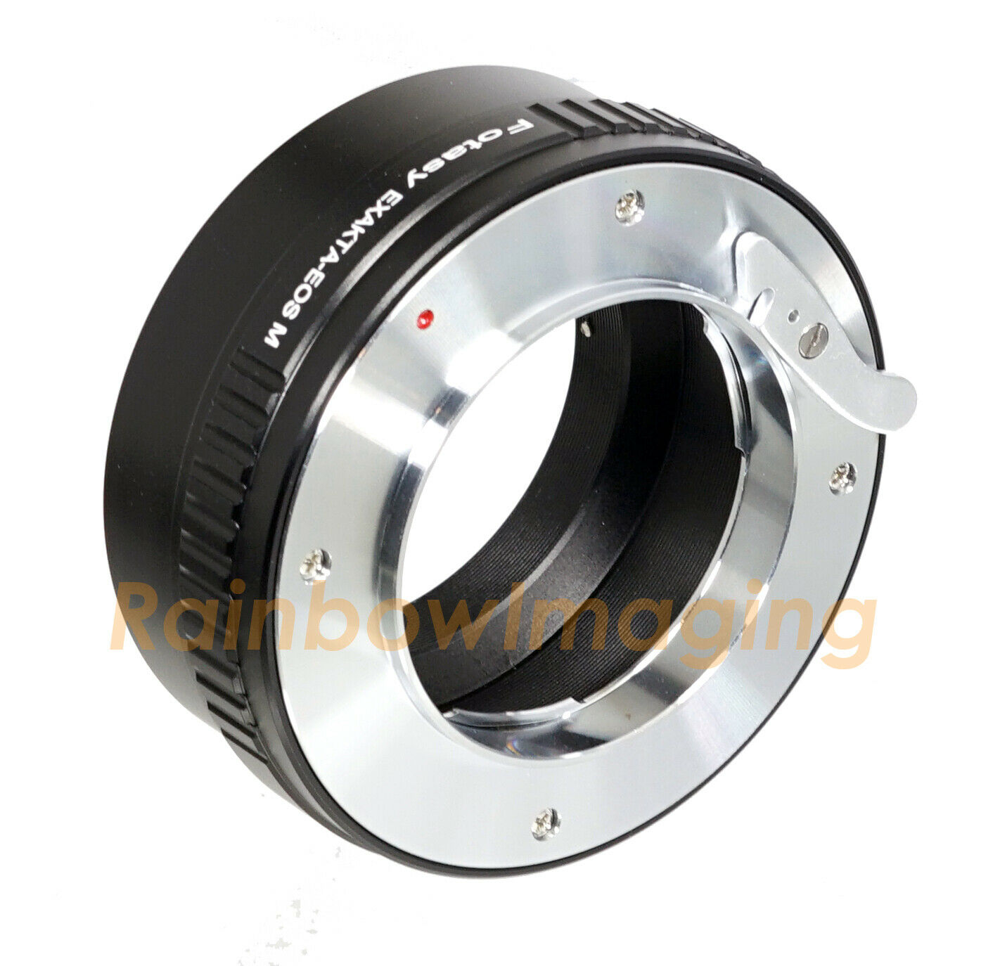
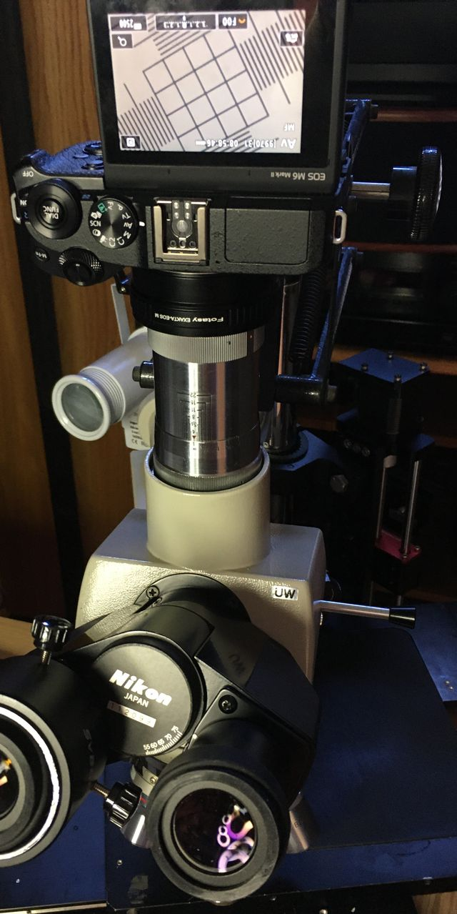

|  |  |
|  |  |  |
|
Recommended for "direct" imaging from Nikon UW trinocular photo port without chimney: Vintage Carl Zeiss Jena Triotar Chrome Lens 1:4 F=13,5 cmitem: 155157118121Condition: Used Max Aperture: f/4 Series: Triotar Focal Length: f=13,5cm Vintage Carl Zeiss Jena Triotar Chrome Lens 1:4 F=13,5 cm.
delivered 19 Sep 2022 Tight fit with Exakta Lens to CANON EOS M adapter, both aperture and focus rings were stiff, but relaxed with exercise. No obvious way to mount securely in Nikon trinocular UW photo port, but M6 mkII LCD images look very much like view with YuYan WF 10X/23 oculars", with no perceptible CA and diagonal field cropped only about 7% from oculars' diameter. UW prism rays are known to be not quit infinite, but best Triotar focus is at the infinity stop, suggesting that the Exacta adapter is probably slightly deeper than ideal. It is, however, nearly perfectly parfocal with objects.  |